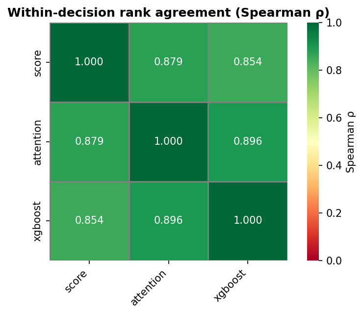

Controlled CivBench on Vox Populi 5.2.7, Civilization V
PredictionA controlled version of CivBench (Chen et al., 2026). Each LLM strategists rotate through 3 standard maps (8 players), each game features 2 of the same LLM strategists + 6 Vox Populi AI players. Experimented with 2 conditions: having LLMs make a decision every turn (base); having them make a decision every 5 turns, or when an important event comes up (per-5).
Compare how well win-probability estimators predict game outcomes, since these estimates underpin the strength scores used to evaluate strategists.
Prediction qualityMeasures how well each estimator identifies likely winners and matches observed outcomes (discrimination and calibration). Module: prediction.evaluate metrics: roc_auc, brier_score, log_loss, balanced_accuracy; n_models: 3
attention performs best on roc auc at 0.8543 using 843 games; scores range from 0.8059 to 0.8543.
metrics
| model | n_rows | n_games | roc_auc | brier_score | log_loss | balanced_accuracy |
|---|---|---|---|---|---|---|
| score | 2773024 | 843 | 0.805936 | 0.091412 | 0.303945 | 0.655276 |
| attention | 2773024 | 843 | 0.854256 | 0.0813343 | 0.267372 | 0.684482 |
| xgboost | 2773024 | 843 | 0.844294 | 0.0857561 | 0.27956 | 0.679861 |
Downloads and supporting files (1)

Estimator agreementShows how closely estimators agree on win probabilities and on the within-turn ranking of players. Module: prediction.compare n_models: 3; n_rows: 2773024
attention and xgboost agree most on player rank (Spearman 0.896); agreement ranges from 0.854 to 0.896 across 2,773,024 shared predictions.
